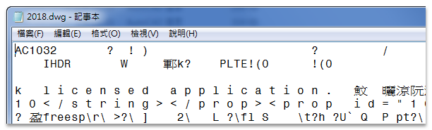
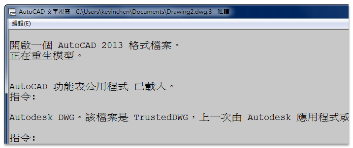
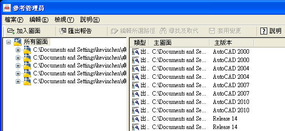
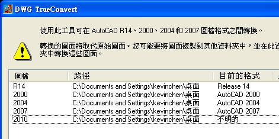
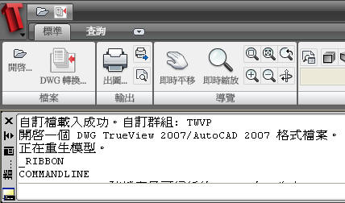

可以使用 記事本 查看 AutoCAD圖檔格式，方法如下:
1.「開始」→「所有程式」→「附屬應用程式」→「記事本」
2.「檔案」功能表 →「開啟舊檔」→「檔案類型」選擇所有檔案 → 選擇DWG圖檔 → 「開啟」
3.請查看前6個字元，配合以下對照表，即可知道 AutoCAD的圖面格式。

-------------------------------------------------------------------
AC1009 → AutoCAD R12 圖檔格式(AutoCAD R12版本)
AC1014 → AutoCAD R14 圖檔格式(AutoCAD R14版本)
AC1015 → AutoCAD 2000 圖面格式(AutoCAD 2000、2000i、2002版本)
AC1018 → AutoCAD 2004 圖面格式(AutoCAD 2004、2005、2006版本)
AC1021 → AutoCAD 2007 圖面格式(AutoCAD 2007、2008、2009版本)
AC1024 → AutoCAD 2010 圖面格式(AutoCAD 2010、2011、2012版本)
AC1027 → AutoCAD 2013 圖面格式(AutoCAD 2013、2014、2015、2016、2017版本)
AC1032 → AutoCAD 2018 圖面格式(AutoCAD 2018 ~ AutoCAD 2013 版本)
-------------------------------------------------------------------
一般在開啟圖檔後，會在指令行顯示檔案格式。

說明:但是多個圖檔就比較麻煩，碰到高階版本會顯示"不相容"或"檔案無效"訊息。
請在「開始」→「所有程式」→「Autodesk」→「AutoCAD 2010」→ 參考管理員
加入圖面時會顯示檔案格式:

說明:參考管理員 是為了編輯參考路徑，在此暫時來檢視檔案格式，越高的版本可以顯示越高的圖面格式。
◆方法四：使用原廠轉檔程式(DWG TrueConvert 2007)
請在「開始」→「所有程式」→「Autodesk」→「DWG TrueConvert 2007」→ DWG TrueConvert(TM)
加入圖面時會顯示檔案格式:

PS:但是無法顯示2010圖面格式。
◆方法五：使用原廠轉檔程式(DWG TrueView)
請在「開始」→「所有程式」→「Autodesk」→「DWG TrueView 2010」→ DWG TrueView 2010
加入圖面時會顯示檔案格式:

※相關主題※
[說明]AutoCAD的版本